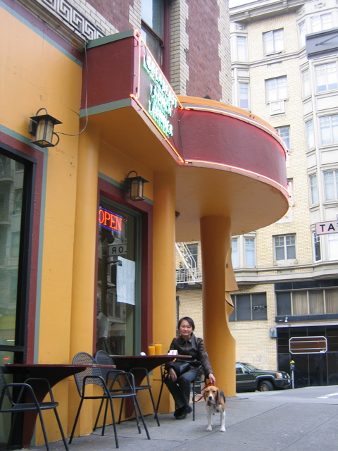

<--Previous Up Next-->

Sunday breakfast
This big tiki head was painted red and guarded a closed storefront for several years. Now he's orange, like the juice, and he serves breakfast.
Not long afterwards it started to rain and we retreated to the hotel for the afternoon. Dinner came from a Thai noodle shop where Huxley was allowed in the entryway but which we neglected to photograph.